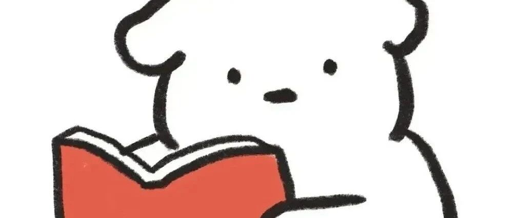

嗯，遇到了一点不开心的事情.......
点击关注 秋秋很开心

🪐
大家好，我是秋秋～
今天心情有点沉重，因为发现要做的事情很多，能做的事却很少。
事情的导火索是我一直做自己的公众号+短视频，重点就放在公众号，兼顾抖音、小红书这块。
结果今天登了下其他平台，发现自己好久都没有同步更新了。
有些平台比如快手，是有流量扶持，送了很多券。可是我都还没来得及用，就过期了......

这些平台按道理，不需要去原创内容，就把做好的视频分发就行了，可是我却没有去做。
🪐
说到底，并不是简单的同步发一下就行。
每次，我还是会根据不同平台想很多发布文案，就连加个关键词也思索好久。
这些平台没有盈利，可是做的时候，还是忍不住一遍又一遍修改。
看似很认真负责，实际浪费了我很多精力。

之前我还做过一个小号，做的时候不觉得有多难。
可每次都信誓旦旦的说更新，最后还是以没精力放弃。
精力，真的是一个有限的资源！
你单独的做一道题，并不难。
可一直让你出题，研究老师会考什么题，不停的在头脑中间假象考试场景，真的就受不了。
那些能让自己心态放松的人真的很厉害。
我想起来我刚去公司上班那会，就觉得自己啥都不会，每天担心给别人添麻烦。
做事的时候就很紧张，养成了来回检查、不断修改的习惯。
现在发现这种习惯其实并不能从根本上解决问题，反而让你的心态越来越紧张。
真正有效的做法是，提前做好准备。
来回修改、临时抱佛脚无意中形成了习惯，慢慢的发现是对精力的一种消耗。
🪐
还有一个原因，我意识到了我一个“致命”的缺点。
我不擅长合作、沟通、领导。
很多次别人给我说，你可以招一个人，但是我一想到找人、对接，我就会很害怕。
这么多年的学习成长，让我知道如何一个人单打独斗，如何听上级的指令好好做事。
可是我不知道怎么领导别人，怎么安排工作，怎么促进合作。

这个问题我意识到了，但想学习，可没那么容易。
想想这个就有点沮丧了.......
🪐
最近在读《原则》这本书，作者说：
只要你以勤奋和有创造性的方式工作，你几乎可以得到任何你想要的东西，但你不可能同时得到所有东西。
不过既然意识到这些问题了，还是要采取一些措施的。
只是同一天，又意识到自己做事纠结、又意识到自己没有领导力，就有点小沮丧了.......
往期精彩内容：
作者介绍：
秋秋，95后自媒体女孩，25岁存到第一个100w。24岁裸辞、现在靠写作理财为生。希望能与你分享，学习、成长、生活中的感悟～

原创文章，转载请告知本人并标注来源
工作联系：17865514429 （微信）
请注明来意 :)
@小红书、抖音、快手：秋秋很开心
喜欢记得星标，让我们一起成长